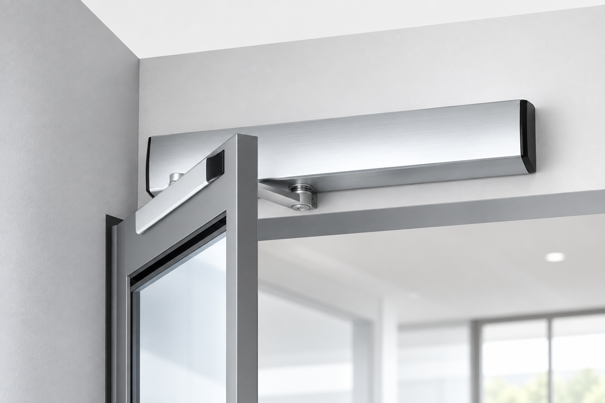

Ouvre-portes automatiques pour portes battantes
Motorisez vos portes battantes, neuves ou existantes : montage simple ou double vantail, bras à compas ou à coulisse, conformité EN 16005, TÜV SÜD et marquage CE. Deux modèles selon le poids du vantail.

Go in 80
Compact et léger (2,8 kg), le Go in 80 motorise les portes battantes jusqu'à 100 kg. Idéal pour bureaux, commerces et accès PMR intérieurs. Temporisation ajustable de 0 à 60 s, vitesses d'ouverture et de fermeture à 45°/s.
- Porte jusqu'à 100 kg
- Boîtier 555 × 55 × 83 mm — 2,8 kg
- Ouverture / fermeture 45°/s — max 99°
- Bras à compas ou à coulisse
- Montage simple ou double vantail
- EN 16005, TÜV SÜD, CE — IP21

Go in 350
Robuste (13,5 kg), le Go in 350 motorise les portes battantes lourdes jusqu'à 350 kg. Adapté aux ERP, entrées de bâtiments publics et portes coupe-feu. Temporisation ajustable de 3 à 9 s, ouverture jusqu'à 105°.
- Porte jusqu'à 350 kg
- Boîtier 610 × 90 × 128 mm — 13,5 kg
- Ouverture 40°/s · fermeture 30°/s — max 105°
- Bras à compas ou à coulisse
- Montage simple ou double vantail
- EN 16005, TÜV SÜD, CE — IP21
Go in 80 ou Go in 350 ?
| Caractéristique | Go in 80 | Go in 350 |
|---|---|---|
| Porte jusqu'à | 100 kg | 350 kg |
| Alimentation | 230 V | 230 V |
| Courant de sortie | 24 V DC · 3 A | 24 V DC · 3 A |
| Boîtier | 555 × 55 × 83 mm | 610 × 90 × 128 mm |
| Poids | 2,8 kg | 13,5 kg |
| Degré d'ouverture max | 99° | 105° |
| Vitesse d'ouverture | 45°/s | 40°/s |
| Vitesse de fermeture | 45°/s | 30°/s |
| Temporisation | 0–60 s (ajustable) | 3–9 s (ajustable) |
| Plage de température | −20 °C / +50 °C | −20 °C / +50 °C |
| Indice de protection | IP21 | IP21 |
| Bras | Compas ou coulisse | Compas ou coulisse |
| Montage | Simple ou double vantail | Simple ou double vantail |
| Normes | EN 16005, TÜV SÜD, CE | EN 16005, TÜV SÜD, CE |
Besoin d'aide pour choisir ?
Notre équipe technique vous accompagne dans le choix de l'opérateur adapté à votre porte et à votre chantier.